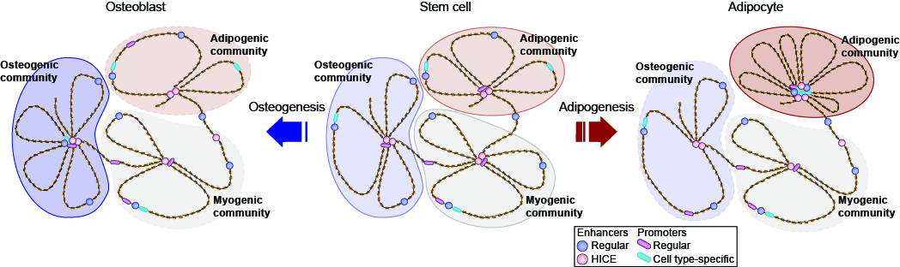
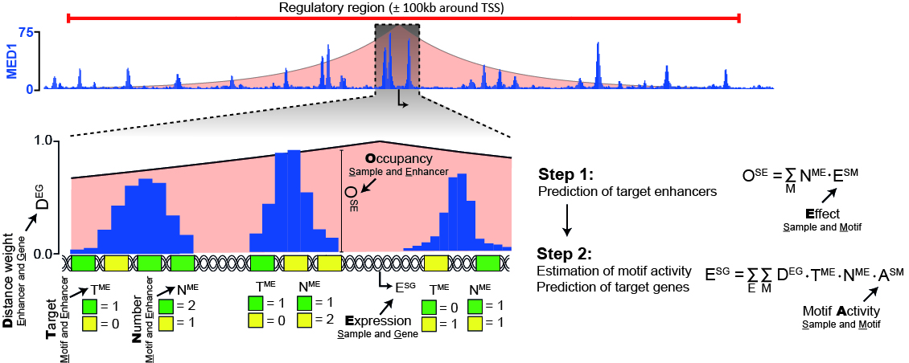

Plasticity of Epididymal Adipose Tissue in Reponse to Diet-Induced Obesity at Single-Nucleus Resolution
Sárvári and Van Hauwaert et al. (2020): Cell Metabolism
We created an atlas of epididymal white adipose tissue from lean and obese mice at single nucleus resolution and charted it to discover wide-spread transcriptional and compositional reprogramming of cell types and subtypes in obesity.
Highly interconnected enhancer communities control lineage-determining gens in human mesenchymal stem cells.
Madsen et al. (2020): Nature Genetics
We performed enhancer-capture Hi-C during adipogenesis and osteogenesis of human mesenchymal stem cells and found that enhancers form communities in 3D, which are intimately linked with gene regulation during differentiation.
Integrated analysis of motif activity and gene expression changes of transcription factors.
Madsen et al. (2018): Genome Research.
We created a novel statistical learning method for prediction of causal transcription factors and benchmarked it against alternative to show that our method outperforms existing methods in finding known factors.
| Gabija Kavaliauskaite | Co-supervised Master student |
| Jacob Fredegaard Hansen | Project student |
| Susan Al-Roubaie | Project student |
| Aleyna Fatma Türkoglu | Project student |
| Tereza Faitová | Master student | 2020 |